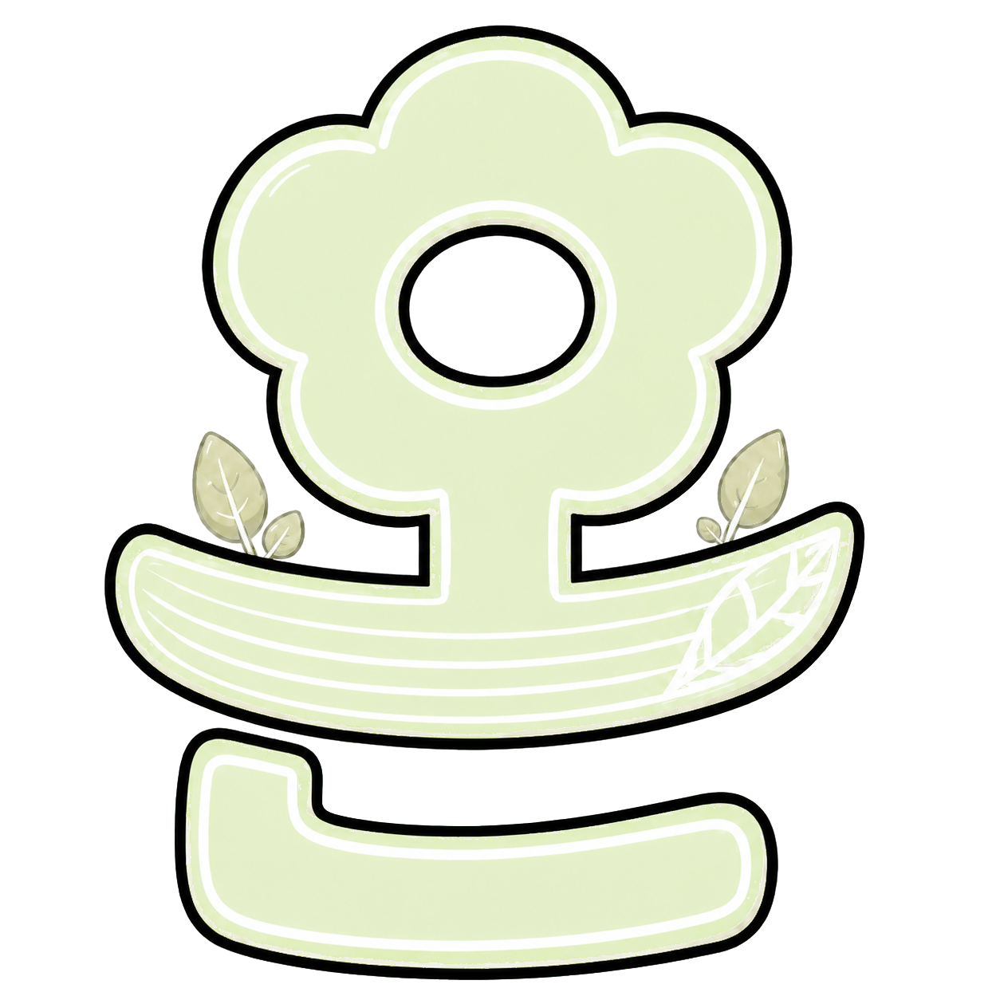
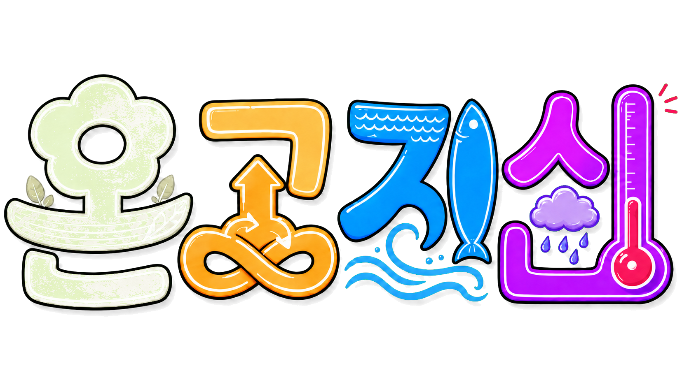
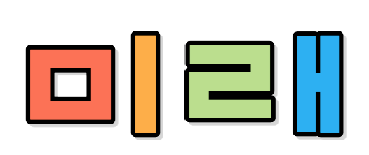
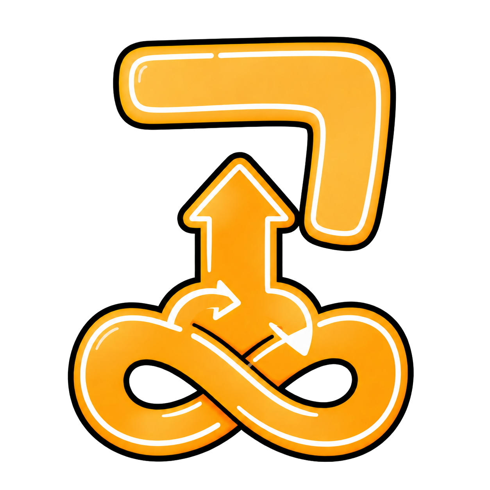
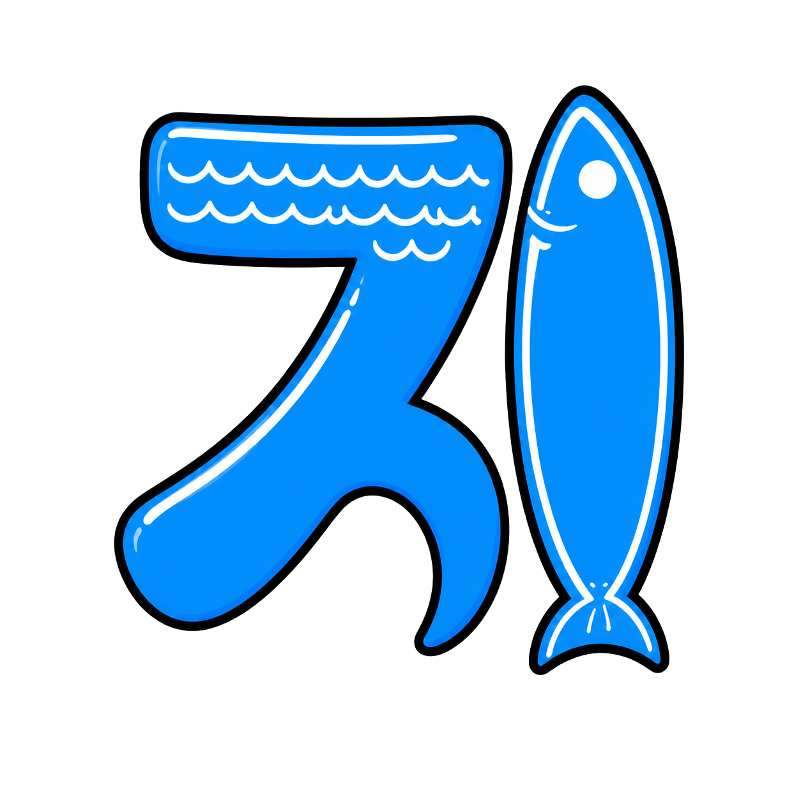
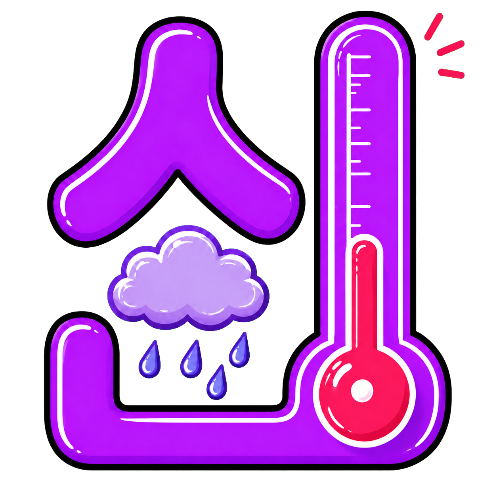
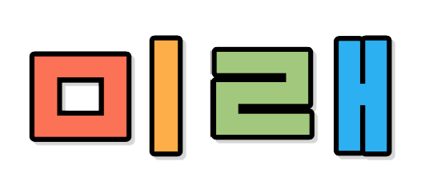
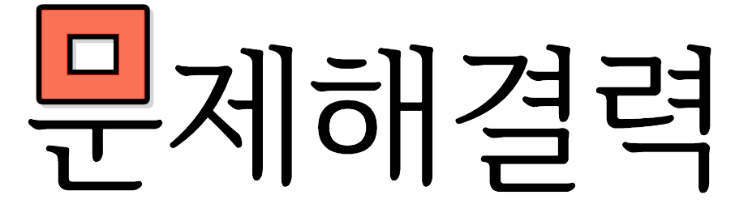
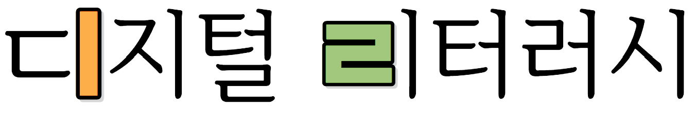
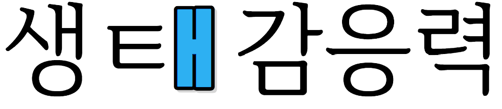

우리가 사는 곳

프로젝트로
생태 시민 기르기전래동화 속 생태 문제를 오늘의 환경 문제와 연결하고 실제적 미디어 자료를 탐구해 설정한 도전과제를 실천하는 프로젝트입니다.
서로 다른 전문성을 지닌 두 교사가 대도시 대규모 학교와 교육 인프라 취약 지역의 소규모 학교에서 공동 설계·적용하여 현장 적합성과 확장 가능성을 검증했습니다.

우리가 사는 곳

우리 지역

우리나라

세계
연구의 필요성
생태 감응력과 디지털 리터러시는 분리된 능력이 아닙니다. 학생이 실제 문제를 읽고, 데이터를 해석하고, 행동으로 옮길 때 미래 생태 시민의 역량이 함께 자랍니다.
기후 위기와 디지털 대전환이 동시에 진행되는 사회에서 생태적 감응력과 디지털 정보 활용 능력을 함께 기릅니다.
친숙한 전래동화를 현대 환경 문제와 연결해 지식 전달을 넘어 분석·설계·실천으로 이어지는 융합 수업을 만듭니다.
우리 주변에서 시작한 질문이 지역, 우리나라, 세계로 넓어지는 다차원적 탐구 경험을 제공합니다.
연구의 목적
용어의 정의
프로젝트의 흐름과 탐구 단계, 교육이 지향하는 미래 생태 시민의 모습을 한곳에 정리했습니다.
전래동화에서 생태 쟁점을 발견하고 지속가능발전목표와 연결한 뒤, 우리가 사는 곳에서 지역·국가·세계로 탐구와 실천의 범위를 넓혀 갑니다.
흥부전
우리가 사는 곳콩쥐팥쥐
우리 지역별주부전
우리나라해님달님
세계전래동화의 생태 쟁점을 발견하는 데서 시작해 디지털 도구로 해결 방안을 구현하고, 생활 속 실천과 성찰로 확장하는 네 단계입니다.
溫故
전래동화를 읽고 생태 쟁점을 발견해 핵심 질문과 지속가능발전목표를 연결합니다.
발견 · 질문考察
기사·영상·통계 등 실제적 미디어 자료를 비판적으로 분석합니다.
분석 · 탐구知慧
디지털 도구로 해결 아이디어를 구체화하고 결과물을 제작합니다.
설계 · 제작革新
생활 속에서 실행하고 성찰·개선하여 공동체로 확산합니다.
실천 · 성찰다차원적 탐구 경험을 통해 주도적으로 문제를 해결하고 연대하는 미래 생태 시민을 기릅니다.

생태 시민문제해결력·디지털 리터러시·생태 감응력을 바탕으로 생태 문제를 주도적으로 해결하고 공동체와 연대하는 시민
급변하는 사회 속에서 다양한 지식과 정보를 활용하여 자신과 공동체의 문제를 주도적으로 해결하는 능력

디지털 기술을 올바르게 이해하고, 문제 해결과 가치 창출을 위해 생산적으로 활용하는 능력

인간이 자연의 일부임을 자각하고, 생명에 대한 공감을 바탕으로 생태계의 지속가능성을 실천하는 능력
네 가지 생태 프로젝트
각 프로젝트는 같은 탐구 절차를 따르면서도, 탐구 범위와 생태 쟁점을 단계적으로 확장합니다. 카드를 선택해 핵심 질문과 수업 활동을 확인하세요.
교수·학습 자료실
수업 준비 자료부터 탐구를 돕는 미디어, 학생들이 완성한 활동 결과물까지 연구의 전체 과정을 확인할 수 있습니다.
검색어를 줄이거나 다른 프로젝트를 선택해 보세요.
연구 결과
두 학교 5·6학년 학생 39명을 대상으로 사전·사후 검사를 실시해 문제해결력, 디지털 리터러시, 생태 감응력의 변화를 분석했습니다.
생태 문제를 스스로 인식·분석하고 해결 방안을 도출하여 실행하는 능력이 향상되었습니다.
인간과 자연의 관계를 깊이 이해하고 생태 문제를 자신의 삶과 연결해 실천하려는 태도가 형성되었습니다.
디지털 정보와 데이터를 비판적으로 탐색·분석하고, 디지털 도구로 해결 방안을 제작·공유하는 능력이 향상되었습니다.
문제해결력·디지털 리터러시·생태 감응력을 고루 함양하여 생태 문제를 주도적으로 해결하고 공동체와 연대하는 미래 생태 시민으로 성장했습니다.
학생 이름·얼굴·학번은 공개하지 않으며, 결과물은 동의와 저작권을 확인한 자료만 게시합니다. 생성형 인공지능은 서비스 연령 제한과 이용 약관을 준수합니다.